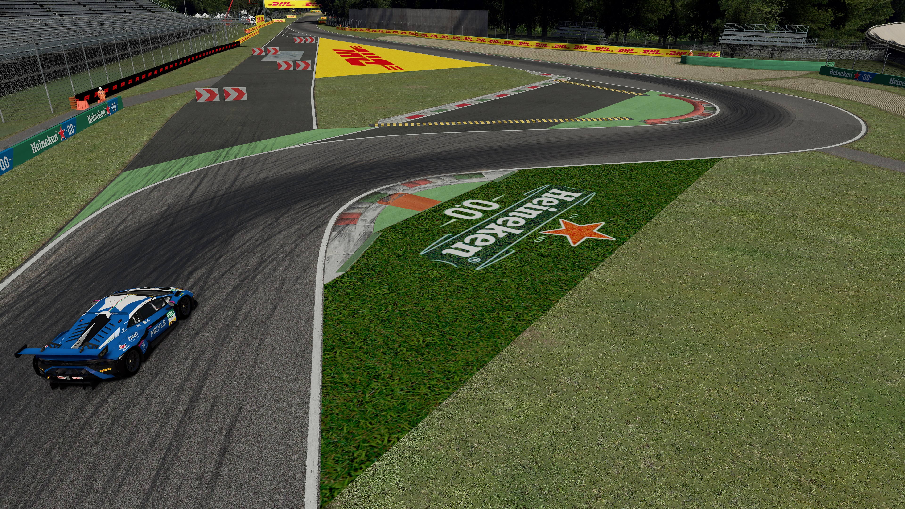
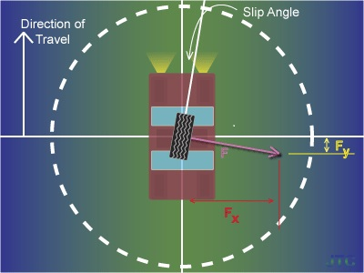
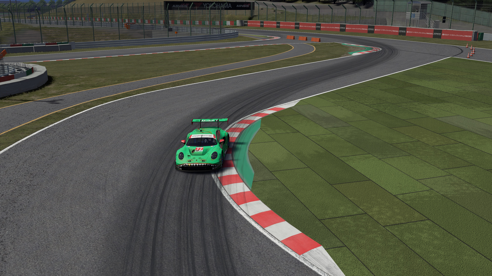

Understeer
Understeer happens when the front tyres cannot provide enough grip for the requested turn. The car moves wider than the driver expects.
01 / RACING BASICS
Motorsport is not simply about pressing the throttle. Fast driving depends on grip, braking, balance and choosing the right path through each corner.
A driver cannot stay at full throttle everywhere. Before a corner, the car may need to slow down so the tyres have enough grip to turn.
A basic corner can be thought of as three connected stages: braking, turning and acceleration. Smoothly connecting these stages is more important than simply being aggressive.
Basic idea: Slow down before the corner, control the car through it, then accelerate as the car becomes straighter.


A tyre has a limited amount of grip. That grip is shared between braking, accelerating and turning.
If almost all available grip is being used for heavy braking, less grip remains for steering. If a car is already cornering near its limit, suddenly adding too much throttle or brake can make the tyres lose grip.
This is why smooth inputs matter. A driver gradually transfers the tyres from braking, to cornering, and then to acceleration.
The racing line is the path chosen through a corner. A common basic line begins on the outside, moves toward the inside near the apex, and returns toward the outside on exit.
Using more of the track makes the effective corner wider. This can reduce the amount of steering needed and allow the car to maintain more speed.
The ideal line can change. Drivers may use a different line when defending, overtaking, driving in rain or preparing for the next corner.
This video gives a visual introduction to racing lines and basic cornering.
Video embedded from YouTube.
Understeer happens when the front tyres cannot provide enough grip for the requested turn. The car moves wider than the driver expects.
Oversteer happens when the rear tyres lose more grip than the front. The rear of the car rotates outward and the car can spin if the driver cannot correct it.
